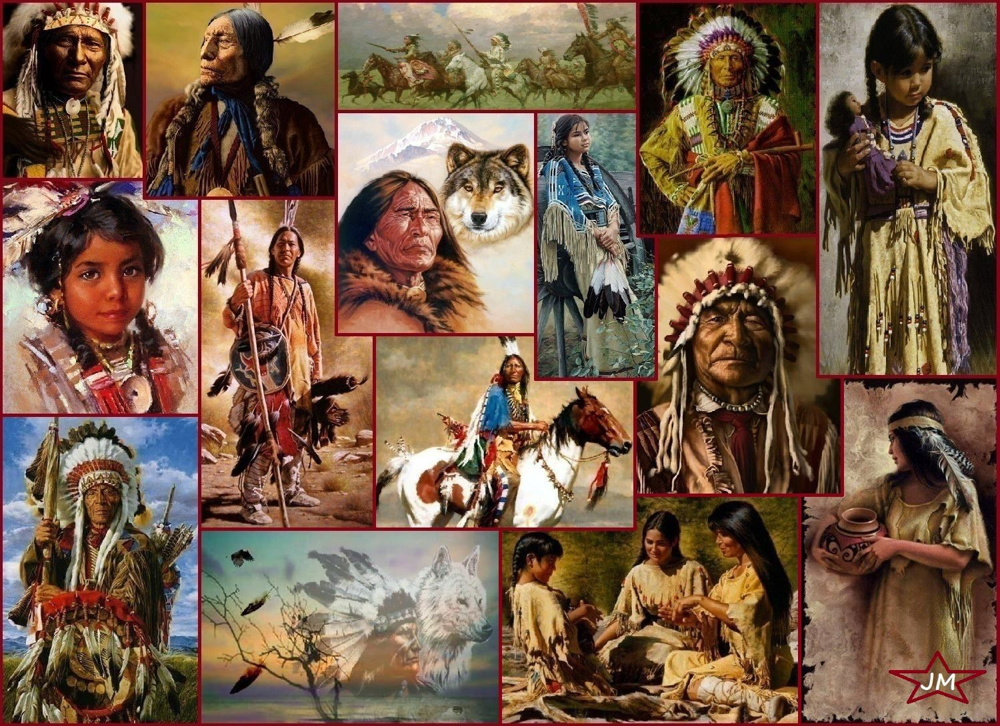

North America

The native people in North America that compose most of the population are Americans.
North American culture is a vibrant tapestry woven from a variety of influences, reflecting the diverse heritage and history of the continent. It encompasses the traditions, languages, arts, and customs of the indigenous peoples, as well as the cultural contributions of European, African, Asian, and other immigrant communities.
North American societies are characterized by a spirit of innovation, diversity, and individualism. While there is no single North American culture, certain shared values and cultural practices can be identified.
Indigenous Cultures:
The indigenous peoples of North America have diverse cultures and rich traditions that are deeply rooted in the land. They have a strong connection to nature, spirituality, and community. Indigenous art, storytelling, and oral traditions play a significant role in preserving and passing on their cultural heritage.
Immigrant Influences:
North America is a melting pot of cultures, shaped by waves of immigration throughout its history. European, African, Asian, and other immigrant communities have contributed their languages, traditions, cuisines, and artistic expressions, creating a diverse cultural landscape.
Popular Culture:
North American popular culture, including music, film, television, sports, and fashion, has a significant influence worldwide. It reflects the dynamic and ever-evolving nature of contemporary North American society.
Cuisine:
North American cuisine is diverse and influenced by various cultural traditions. From American fast food to Mexican, Caribbean, and indigenous cuisines, there is a wide range of flavors and dishes to explore across the continent.
Arts and Entertainment:
North America is a hub for arts and entertainment. It is home to Broadway in New York City, Hollywood in Los Angeles, and numerous museums, galleries, and theaters. The continent celebrates a variety of artistic expressions, including visual arts, theater, music, dance, and literature.
Sports:
Sports play a significant role in North American culture. Popular sports like American football, baseball, basketball, ice hockey, and soccer (football) have dedicated fan bases and contribute to a sense of community and identity.
Freedom of Expression:
North America places a strong emphasis on freedom of speech and expression. The region has a vibrant tradition of activism, social movements, and the protection of individual rights.